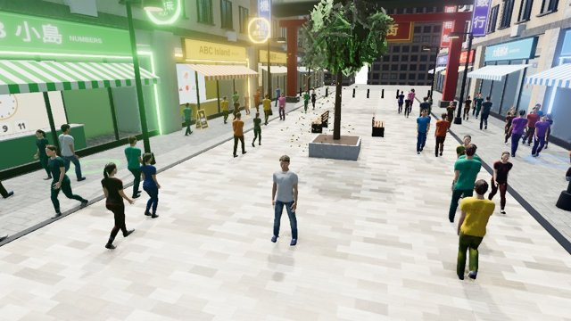
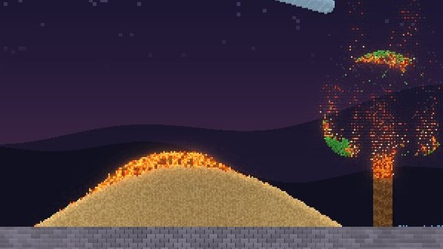
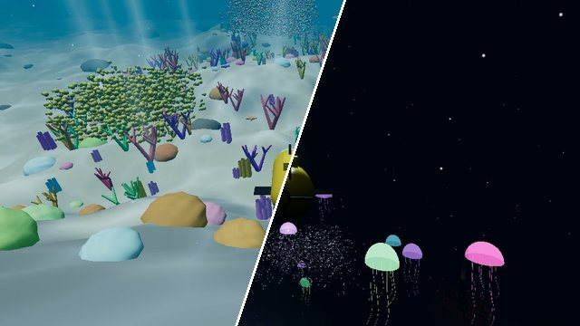
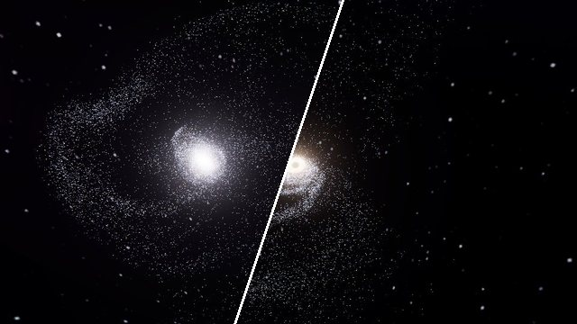

MW · Lab · WebGPU
MW 實驗室
給大一點的孩子和大人的進階遊戲。這裡的作品都用 WebGPU：讓顯示卡同時計算成千上萬個角色、粒子和光線，做出一般網頁遊戲做不到的畫面和深度。
可以玩了

WEBGPUMW 大街 · WebGPU 版
原本的 3D 商店街用 WebGPU 重做：街上有上百位會讓路、會停下來看櫥窗的行人；白天、黃昏、夜晚自己輪替，晚上路燈和招牌亮起來；下起雨來地面變濕，水窪映出霓虹燈。廣場有噴水池和一群鴿子，走近牠們會飛起來。每間店一樣可以進去玩遊戲。

WEBGPU沙之實驗室
倒沙子、水、岩漿、油、種子，放火、畫牆：沙會堆成小山、水會流、岩漿碰到水變石頭、火會燒掉木頭、種子喝水長成小樹。畫面上幾十萬顆粒子，每一顆都在顯示卡上照規則移動。有自由玩，也有 6 個關卡（把水引進杯子、擋住岩漿、森林救火…）。

WEBGPU深海探險隊
駕駛黃色小潛水艇從珊瑚礁一路潛到海溝：上千條魚成群游動、看到潛艇會散開；陽光從海面照下來，海底有晃動的光紋；越潛越暗，打開探照燈才找得到發光水母、鮟鱇魚和熱泉的管蟲。蒐集 15 種海洋圖鑑，順便把 20 個垃圾撿乾淨。

WEBGPU銀河建造師
丟進星系和黑洞，看重力讓幾十萬顆星星轉成旋臂、兩個星系擦身而過甩出長長的潮汐尾巴、黑洞把星星吞掉。另外有 5 個軌道任務：用彈弓發射行星、月亮、彗星，還要學會「彈弓加速」。邊玩邊學萬有引力，附天文小百科。
規劃中 先記下想法，之後一款一款做；想先做哪一款可以跟小幫手說
萬軍對決 3D
「萬軍守城」的大軍對決搬到真正的 3D 戰場：兩邊各上千名士兵同時衝鋒、互相閃避、包圍，弓箭和投石的彈道都看得到；地形有山坡、河流、樹林，會影響行軍速度。指揮官可以畫線指揮各隊走位，看陣型怎麼決定勝負。
夜雨賽車
Sunny Circuit 的城市夜賽：下雨的街道映著霓虹燈、車燈照亮雨幕、輪胎濺起水花，路面的積水會讓車子打滑。賽道就在 MW 大街這一帶，比賽完可以開回大街上逛。